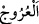

EVLERE GİRDİĞİNİZ ZAMAN
SELÂM VERİN
61. Âmâya güçlük yoktur; topala güçlük yoktur; hastaya da güçlük yoktur. Sizin
için de, gerek kendi evlerinizden, gerekse babalarınızın evlerinden, annelerinizin
evlerinden, erkek kardeşlerinizin evlerinden, kız kardeşlerinizin evlerinden,
amcalarınızın evlerinden, halalarınızın evlerinden, dayılarınızın evlerinden,
teyzelerinizin evlerinden, veya anahtarlarını uhdenizde bulundurduğunuz
yerlerden, yahut dostlarınızın evlerinden yemenizde bir sakınca yoktur. Toplu halde
veya ayrı ayrı yemenizde de bir sakınca yoktur. Evlere girdiğiniz zaman, Allah
tarafından mübarek ve pek güzel bir yaşama dileği olarak kendinize (birbirinize)
selâm verin. İşte Allah, düşünüp anlayasınız diye size âyetleri böyle açıklar.
“Âmâya” gözünü kaybeden kimseye “güçlük” vebâl ve günah “yoktur; topala
güçlük yoktur” “ yukarı doğru yürümek, yükselmek mânâsınadır. Kişinin ayağına
bir şey isâbet edip topallar gibi yürürse “ fiili kullanılır. Kişi yaratılıştan aksak
olduğu zaman ise “ fiili kullanılır.
“Hastaya da güçlük yoktur” “ (hastalık)” insana has îtidalin bozulması
(hastalık)” insana has îtidalin bozulması
demektir. Bu üç grup kimse, sıhhatli kimselerin kendilerinden tiksinmelerinden, hareket
ve davranışlarıyla kendilerine eziyet etmelerinden sakındıkları için onlarla beraber
yemek yemekten sıkılıp çekiniyorlardı. Âmâ beraber yemek yediği kimse tarafından
görülür fakat o bunu hissetmez. Topal otururken gerekenden daha çok yer kaplar,
dolayısıyla arkadaşının yerini daraltır. Hasta ise kötü koku, açıktaki yara, akan burun ve
benzeri gibi arkadaşını rahatsız edecek durumlardan uzak değildir. Bu sebeple Allah
Teâlâ, bu gibilerin insanlarla beraber yemek yemelerinde bir beis ve günah olmadığını
bildirmiştir.